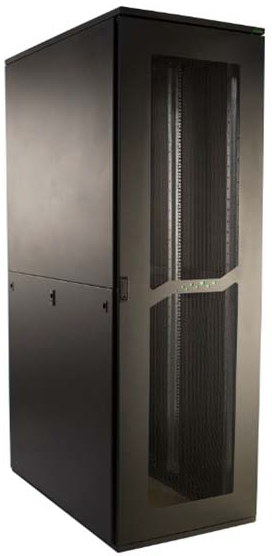

Nuestros productos para la Industria Eléctrica
GABINETE MODULAR ‐GM‐
Incluye: Estructura, Puerta 2mm con junta continua de poliuretano inyectado y cierre a falleba de 4 puntos, Techo, Piso con entrada de cables regulable, Tapa posterior atornillable, Sin Placa de montaje. Color: Gris Luminoso RAL 7035. Unidad de empaque: 1 pieza. Atención: No se incluyen laterales, zócalos ni placa de montaje en estos gabinetes para el suministro estándar, según necesidad solicitarlos por separado.
GABINETE ESTANCO ‐GE‐

Incluye: Cuerpo en chapa de acero de 1,6 mm de espesor, puerta de 2 mm con junta continua de poliuretano inyectado y cierre de media vuelta tipo perilla, placa de montaje galvanizada 2mm de espesor. Kit de puesta a tierra. Color: Gris Luminoso RAL 7035. Unidad de empaque: 1 pieza.
GABINETE ACERO INOXIDABLE ‐GA‐
Incluye: Cuerpo completamente soldado en chapa de acero inoxidable AISI 304 de 1,5 mm de espesor, bisagras ocultas en acero inoxidable con apertura de 100 grados, cierre DIN en acero inoxidable AISI 304, puerta con refuerzos y secuencia de agujeros con paso de 25mm, Placa de Montaje. Cuerpo y puerta con pernos cobreados de puesta a tierra. Pulido con terminación scotch‐brite. Unidad de empaque: 1 pieza.
Nuestros productos para la Tecnología de la Información
RACK CABLEADO ESTRUCTURADO ‐DC‐
Incluye: Puerta delantera con vidrio templado de 6 mm con cerradura tipo Yale, 4 montantes regulables (Para profundidad 1000 y 1200mm, 6 montantes), laterales, techo con una entrada de cables y precalado para unidad de ventilación, piso abierto y pies de nivelación. Tratamiento superficial con fosfatizado de zinc y pintado electrostático texturado color Negro RAL 9005.. (Bajo demanda RAL 7035). Unidad de empaque: 1 pieza.
RACK SERVIDORES ‐DC‐
Incluye: Puerta delantera de una hoja microperforada con superficie libre mayor al 78% y puerta trasera de dos hojas microperforada, ambas puertas con cerradura tipo Yale, 4 montantes regulables (Para profundidad 1000mm y 1200mm, 6 montantes), laterales, techo con dos entradas de cables, piso abierto y pies de nivelación. Tratamiento superficial con fosfatizado de zinc y pintado electrostático texturado color Negro RAL 9005. (Bajo demanda RAL 7035). Unidad de empaque: 1 pieza.
MINIRACK -WM-
Incluye: Cuerpo en chapa de acero con espesor 1,25 mm, dos montantes de 19" roscados, puerta delantera con acrílico de 2 mm y cerradura. Parte posterior libre con posibilidad de colocarle un gabinete o tapa posterior posterior en caso de ser necesario. Tratamiento superficial con fosfatizado de zinc y pintado electrostático texturado color Negro RAL 9005. Suministro en alturas de 6U, 8U, 10U, 12U y 15U. Unidad de empaque: 1 pieza.